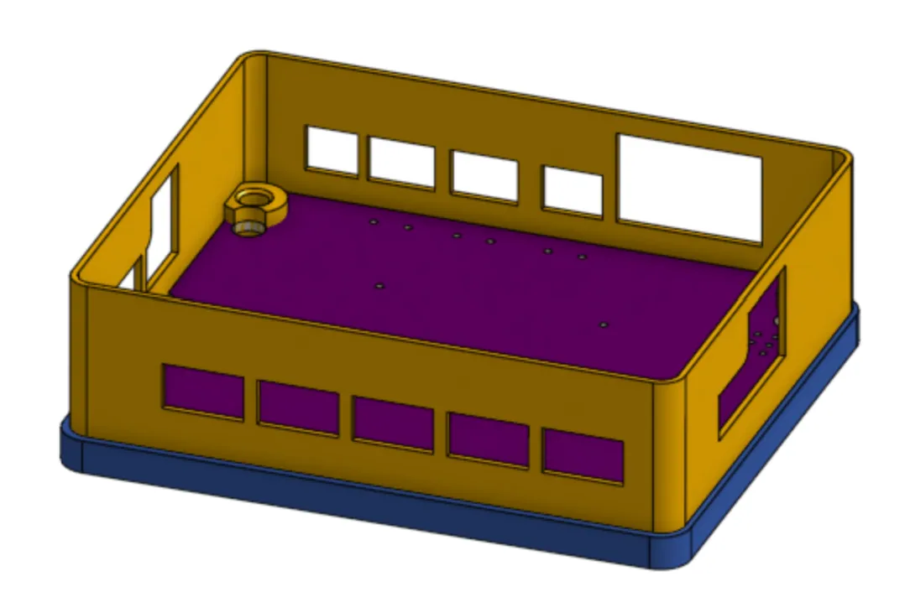
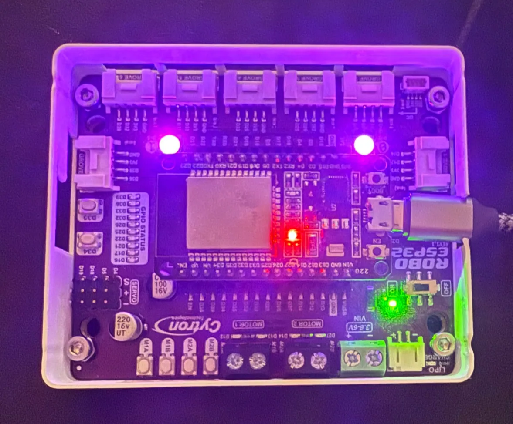
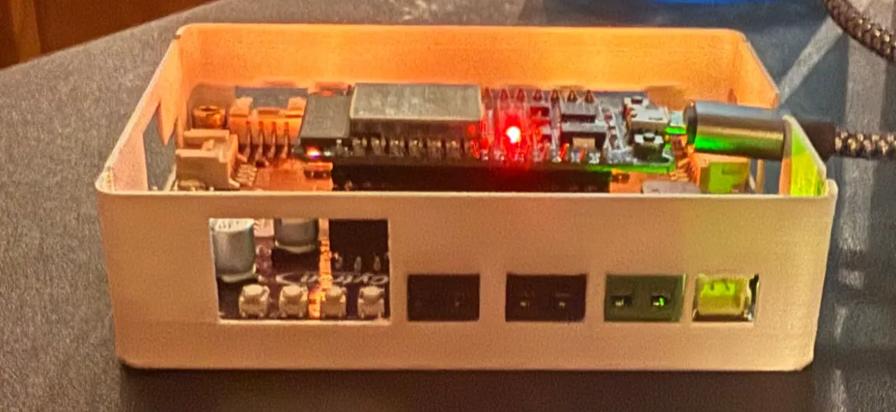

Week 1: ESP32, MicroPython & a Board Case
1. Setting up the ESP32 with MicroPython
1a.) Setting up the ESP32
Connect the ESP32 to your computer via micro-USB on the ESP32’s end and USB or USB-C on the other.
If your computer doesn't recognize the board (no COM port / serial device shows up), you may need to install a driver for its USB-to-serial chip (in my case was CP2102).
1b.) Download Thonny
Get Thonny from thonny.org to use as a Python IDE since it has built-in MicroPython support.
1c.) Install MicroPython
Thonny can flash MicroPython onto the board directly:
- Open Thonny → Tools → Options → Interpreter
- Set interpreter to MicroPython (ESP32)
- Choose "Install or update firmware" if prompted, select your board's port, and let Thonny flash it
- Once flashed, select the correct port and Thonny connects straight to the board's REPL (in the console) you'll see a
>>>>prompt if it worked
At that point you can run code live in the REPL or write a script and save it to the board as NAME.py, where NAME can be anything you like, though it’s best to keep in snakeCase or PascalCase.
2.) Turning on the NeoPixels and my exploration
Following the MicroPython NeoPixel docs, first check two things about your specific board:
- Which pin the NeoPixel data line is connected to (mine was 15)
- How many NeoPixels are on the board (mine had 2)
Some example code might look like this:
import neopixel
from machine import Pin
lights = neopixel.NeoPixel(Pin(15),2)
lights[0] = (20,0,20) # left light is purple
lights.write()
My exploration: I didn’t get the chance to explore too much in class, but I was able to edit this to make the two onboard lights mimic aircraft navigation lights: one solid red, the other green with a small blue tint (0% red, 90% green, 10% blue) to test that both could be turned on simultaneously and that all three color channels worked:
import neopixel
from machine import Pin
lights = neopixel.NeoPixel(Pin(15),2)
lights[0] = (0,20,2)
lights[1] = (20,0,0)
lights.write()
After today’s class I implemented the buttons in with that and added a second mode that goes a hue shift cycle when you press button D34 once and then goes back to the red-green lights if you hit it again (though they alternate between red being on and green being on every second now)
import neopixel
from machine import Pin
from time import ticks_ms, ticks_diff
# NeoPixel setup
lights = neopixel.NeoPixel(Pin(15), 2)
# button setup
btn = Pin(34, Pin.IN, Pin.PULL_UP)
DEBOUNCE_MS = 200
last_press = 0
state = 0 # 0 = blinking plane lights, 1 = hue cycle
def button_handler(pin):
global last_press, state
curr_time = ticks_ms()
if ticks_diff(curr_time, last_press) > DEBOUNCE_MS:
if pin.value() == 0:
last_press = curr_time
state = 1 - state # toggle state
print("Button pressed, State:", state)
btn.irq(trigger=Pin.IRQ_FALLING, handler=button_handler)
# Color wheel helper function was pulled from the
# internet because I didn't know how to hue shifting
def color_wheel(pos):
pos = pos % 256
if pos < 85:
return (pos * 3, 255 - pos * 3, 0)
elif pos < 170:
pos -= 85
return (255 - pos * 3, 0, pos * 3)
else:
pos -= 170
return (0, pos * 3, 255 - pos * 3)
# Main loop
last_update_time = 0
blink_interval = 1000 # ms, for state 0
hue_interval = 30 # ms, for state 1
blink_on = True
hue = 0
while True:
curr_time = ticks_ms()
if state == 0:
if ticks_diff(curr_time, last_update_time) >= blink_interval:
last_update_time = curr_time
blink_on = not blink_on
if blink_on:
lights[0] = (0, 20, 2) # green
lights[1] = (0, 0, 0) # off
else:
lights[0] = (0, 0, 0) # off
lights[1] = (20, 0, 0) # red
lights.write()
else:
if ticks_diff(curr_time, last_update_time) >= hue_interval:
last_update_time = curr_time
color = color_wheel(hue)
lights[0] = color * (20/256)
lights[1] = color * (20/256)
lights.write()
hue = (hue + 1) % 256
3.) Link to my Github
Both what I was able to get done in class and this more complex code I did afterward are in my Github under lightsDemo.py and lightsExploration.py respectively.
4.) Case design for the Robo ESP32
This was designed in Onshape using the .step file provided by Cytron, the designer of the Robo ESP32 to make the board fit snuggly into place with 4 stanchions aligned with the 4 larger holes in the board. Through which M3 screws could be driven.

Pictures (video doesn’t fit in 5MB limit)
Here’s what it looks like in person. In the top image it is in the purple stage of the hue cycle rotation and in the second image, though it’s a tad harder to see, it is blinking green on the right side.


The video won’t upload to Notion while staying under the 5 MB limit for the free plan, so pictures will have to suffice until I can figure out how to compress it.
Originally written in Notion.